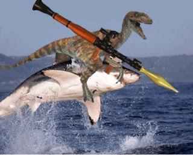
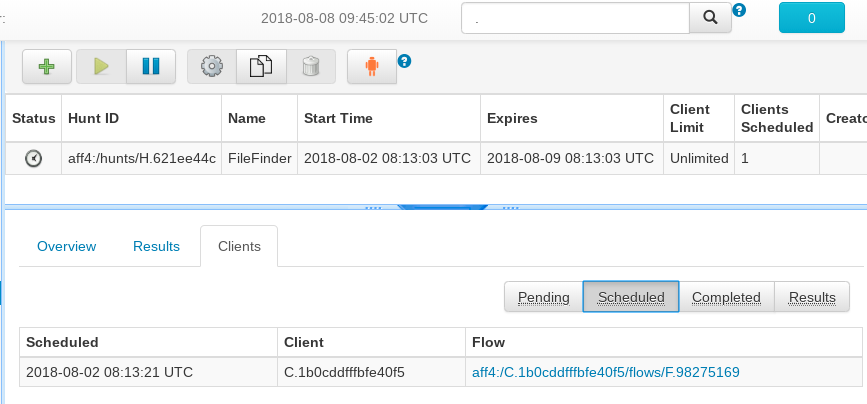

Hunting - What Velociraptors do best!
A hunt is a feature where a single flow may be run on multiple clients at the same time. Typically a hunt looks for a particular indicator of compromise across the entire deployment, or maybe collect the same files from every deployed agent. By their nature, hunts cause multiple flows to run simultaneously and so this creates a large contention of shared state.
Velociraptor has completely redesigned the way that hunts are implemented in order to avoid database locking and increase hunt processing efficiency.
Now we hunt like this:
How are hunts scheduled?
GRR allows hunts to be scheduled by a few client properties such as OS type, label, users etc. This works because GRR has an extensive data model of endpoint properties. However, this requires that the data model be refreshed periodically to be kept accurate. For example, to run a hunt of all machines with a suspected compromised user account we can schedule the run on all machines where the user has logged in, but because GRR uses its data model to decide if a machine should be issued the hunt, the data model may be out of date and GRR will not schedule the hunt on machines which have only recently been logged into. For this reason we typically run the Interrogate hunt very frequently causing a lot of extra load on the system and clients hoping to minimize the time window where the data model is out of date with reality.
Velociraptor’s approach is different - since Velociraptor does not really maintain a data model server side, we check the client’s information for every hunt, before we even decide if the hunt should be scheduled for this client. This is done by issuing a VQL query to the client.
Sometimes we don’t necessarily want the client to know exactly why we are scheduling the hunt (e.g. in the compromised user account case we don’t want to advertise the exact username we are looking for). In these cases we run another VQL query on the server side.
So hunt selection is managed by two different VQL queries - a client side one and a server side on.
The default client side VQL queries simply collects the usual facts like OS version, Username etc, while the server side query filters the results with more specific conditions. This approach does not reveal to the client the hunt’s condition:
Client side VQL:
SELECT OS, Architecture, Fqdn, Platform,
config.Client_labels AS Labels
FROM info()
Server side VQL:
SELECT * from rows
WHERE Fqdn =~ '(?i)myhostname.+' AND 'MY_LABEL' IN Labels
The hunt’s life cycle
When the hunt is started, the server updates its in-memory list of active hunts managed by the Foreman. Clients then poll the foreman for new hunts they should participate in. Clients remember the last hunt they participated in and so they present this hunt’s timestamp to the foreman. If a new hunt is available, the foreman can immediately launch the CheckHuntCondition flow on the client.
Note
The clients themselves are actively keeping track of the hunts they participated in. This avoids the server having to check the client’s DB record.
The CheckHuntCondition flow issues the client side VQL queries and then runs the server side query on the results. If the query matches (i.e. the hunt should be scheduled for this client), the client’s record is written into the hunt’s “pending” queue.
The hunt manager
Each hunt specifies its own client recruitment rate (i.e. how many clients will be started per minute). The hunt manager is a component which periodically reads all hunts and schedules flows for these hunts if the hunts’ client rate allows for more clients to be scheduled. It does this by moving clients from the pending queue to the running queue and starting respective flows for them.
Once each of those flows completes, the record is moved from the running queue to the completed queue or the results queue if the flow produced any results. We can observe how many clients exist in each queue using the GUI.
The flows that hunts launch arn the client. However, when they complete, a small record is made in the hunts’s results queue pointing to the flow. It is therefore possible to retrieve all results from the hunt from all client’s. For example, the GUI allows downloading a zip file of all the results and files uploaded:

Since hunts invoke regular flows, and Velociraptor flows are much lighter than GRR’s flows, hunts are much cheaper to run in terms of resources consumed.